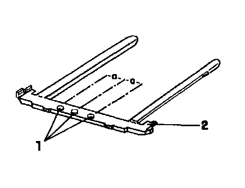

Sunroof Noise Elimination
Noise from the sunroof heard while driving on rough roads may be caused by vibration between the sunroof trim frame and the headliner.
A new sunroof trim frame has been installed in production from 08.94.

From 09.94 production, the noise absorbers 1 on the trim frame 2 have been relocated.
During 08.94 production:
- Dimension A = 106 mm (4.17 in.)
- Part number: 357 877 261 O1C
From 09.94 production:
- Dimension A = 140 mm (5.51 in.)
- Part number: 6N0 877 261
Vehicles manufactured during 08.04 may still exhibit some noise and vibration problems. If so, the sunroof trim frame must be replaced with the later version (dimension A = 140 mm or 5.51 in.).